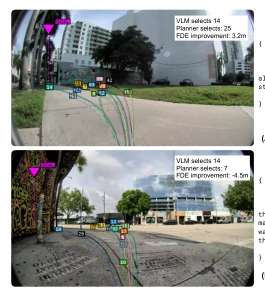
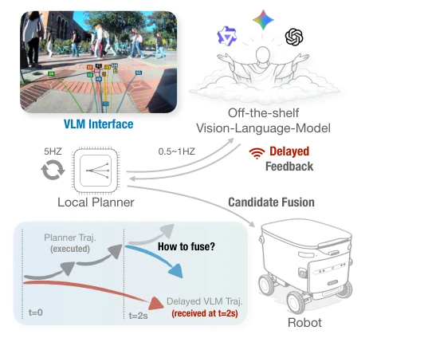

EN
← 返回 ← Back
Slow Brain, Fast Planner: Latency-Resilient VLM-Augmented Urban Navigation
Zhenghao "Mark'' Peng, Honglin He, Quanyi Li, Yukai Ma, Bolei Zhouabs pdf
论文点评 Review 这篇论文给具身导航开了个“外挂”，用慢速但聪明的 VLM 给快速但笨拙的规划器“提点”。虽然没搞端到端 VLA 的笨功夫，但用几何相似性做融合层确实巧妙，解决了延迟导致的“过时指令”问题。不过，这招本质是“借脑”，如果规划器生成的候选集里压根没有好路，VLM 再聪明也选不出花来，属于典型的“巧妇难为无米之炊”。而且云端 VLM 的延迟和成本在真实部署中依然是个隐忧，所谓的“训练-free”只是省了微调，没省推理开销。这种“慢脑快手”的架构在理论上很性感，但在高动态环境下，VLM 的语义理解是否真的比规划器的几何直觉更可靠，仍需观察。此外，系统依赖特定规划器生成的候选集，泛化性受限，若规划器本身失效，整个系统便失去意义。
—
研究动机 Motivation 现有学习式规划器 [1, 2, 3] 擅长生成动力学可行轨迹，但在语义模糊场景（如路口、行人交互）下评分函数失效，导致“轨迹评分差距”。端到端 VLA [8, 9, 10, 11] 虽能理解语义，但推理慢且难训练。现有混合方案要么直接执行过时轨迹不安全 [12, 13]，要么需要大量数据训练接口 [14, 15, 16]。本文旨在解决 VLM 高延迟与实时控制之间的矛盾，利用 VLM 的语义理解弥补规划器的场景认知短板，同时保持规划器的反应速度。
—

Figure 5: (A) At a junction, the VLM picks tra- jectory 14 along the sidewalk curve. (B) On a routine straight, the VLM applies near-identical reasoning but again picks 14, while the planner’s argmax 7 was better. 方法 Method 系统架构采用松耦合的双环设计。快环由本地规划器（如 S2E [3]）以 5-20Hz 频率运行，基于当前观测生成 K 个动力学可行的候选轨迹，并赋予内部置信度分数。慢环则异步调用云端 VLM，将候选轨迹渲染为带编号的彩色多段线叠加在摄像头图像上，VLM 返回最佳轨迹的索引。由于 VLM 推理耗时 1-3 秒，直接执行会导致机器人基于过时信息运动。为此，论文提出“延迟弹性融合层”。首先，利用里程计将过期的 VLM 轨迹运动补偿至当前机器人坐标系，计算“视距感知相似度”，仅比较重叠的时间段，避免强制匹配未来尾部。其次，设计两种融合策略：Score Fusion 将相似度作为加分项直接叠加到规划器分数上，但存在无界风险；Probability Fusion 则混合分布，通过系数 α 限制 VLM 影响力上限，更稳定。此外，采用 VLM Streaming 机制，以固定频率发送查询而不等待响应，确保融合层始终有最新的语义指导。这种设计使得 VLM 仅作为语义偏置，不破坏规划器的实时性和安全性。
—

Figure 1: Slow Brain, Fast Planner. A fast planner generates dynamically feasible candidates and a slow VLM selects among them. Score Fusion blends the stale VLM choice into the planner’s real-time scoring via geometric similarity with exponential decay, en- abling continuous control. 实验 Experiments 实验分为离线选择、仿真闭环和真实部署三部分。离线测试基于 2000+ 真实校园日志，对比 Planner Argmax 与 VLM 选择，结果显示在复杂场景下 VLM 将 ADE 从 1.64m 降至 1.16m，接近 Oracle 下界。仿真中引入 0-5s 的随机延迟，Score Fusion 和 Probability Fusion 在 5s 延迟下仍维持 80% 以上成功率，而直接执行 VLM 轨迹（VLM Hold）在 2s 后崩溃。真实部署使用四轮配送机器人，在 4G 网络下（1.5-3s 延迟）运行，概率融合策略将每 100 米人工接管次数从 3.49 次降至 0.87 次，且最长自主行驶段达 111.7 米。消融实验进一步验证了 Top-K 候选筛选优于几何多样性采样，且隐藏规划器分数能防止 VLM 过度依赖规划器评分，提升其独立判断能力。
—